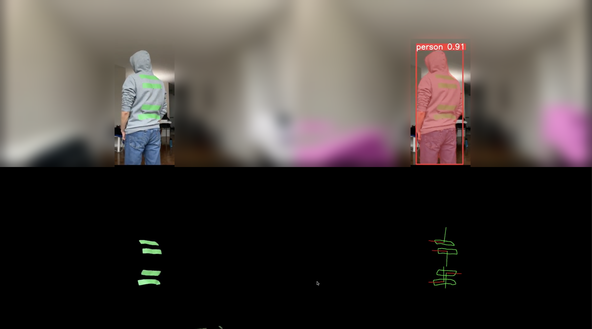

Quantifying Biomechanical Movements
3D tracking of ankle and spine movement, fusing stereo vision, human segmentation, and IMU sensing into a single measurement pipeline.
Developed with Andrew Cheung and Richard Song for ECE516 at the University of Toronto, this project quantifies ankle and spine movement in 3D by combining computer vision with wearable inertial sensing. A stereo camera rig and YOLO-based human segmentation isolate the subject and recover 3D position, while IMU sensors strapped to the ankle and spine capture orientation directly. Principal component analysis then reduces the combined trajectories to the dominant axes of motion, giving a compact, quantified measure of movement that neither sensing modality could produce alone.

Top: raw stereo frame (left) and YOLO segmentation output (right), detecting the subject and surrounding furniture. Bottom: extracted ankle and spine keypoints tracked over time. Background blurred to protect the subject's location.
How It Works
The Problem
Clinical assessment of ankle and spine mobility is usually either coarse (visual observation, goniometer readings) or expensive (motion-capture labs with dozens of markers). A system that gives quantified, repeatable movement data using low-cost cameras and consumer IMUs makes that kind of measurement practical outside a lab.
The Approach
Vision: segmentation and stereo reconstruction. YOLO identifies and segments the subject in each stereo frame, removing background clutter. Matching the segmented subject across the stereo pair recovers 3D position over time.
Inertial: direct orientation from IMUs. IMU sensors mounted at the ankle and spine measure orientation directly, independent of camera visibility or occlusion, and at a much higher sample rate than vision alone can provide.
Fusion and reduction: combining and simplifying. Vision-based 3D position and IMU orientation are fused into a single trajectory per joint. PCA then reduces that trajectory to its dominant axes, turning a noisy, high-dimensional signal into a small set of interpretable movement metrics.
Vision and inertial branches run in parallel and are fused into a single 3D trajectory per joint, which PCA reduces to a small set of interpretable motion metrics.
Status
Completed as part of ECE516 coursework. The repository is archived; code for the IMU sensing, YOLO segmentation, and stereo vision components is organized in separate modules for reuse.